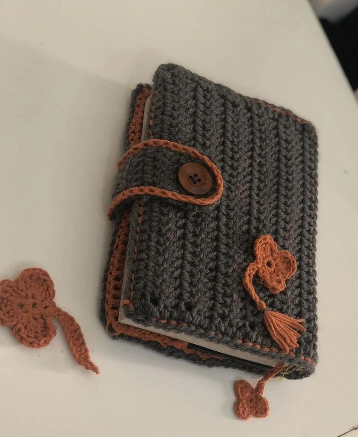
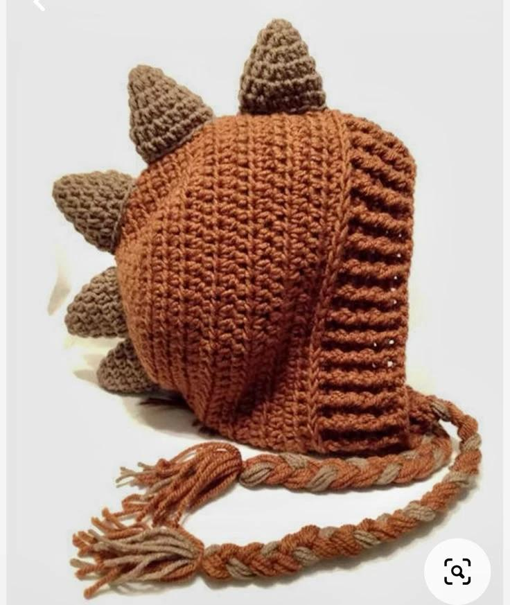
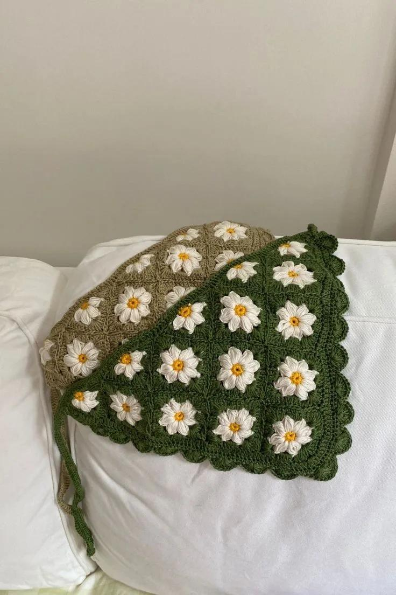
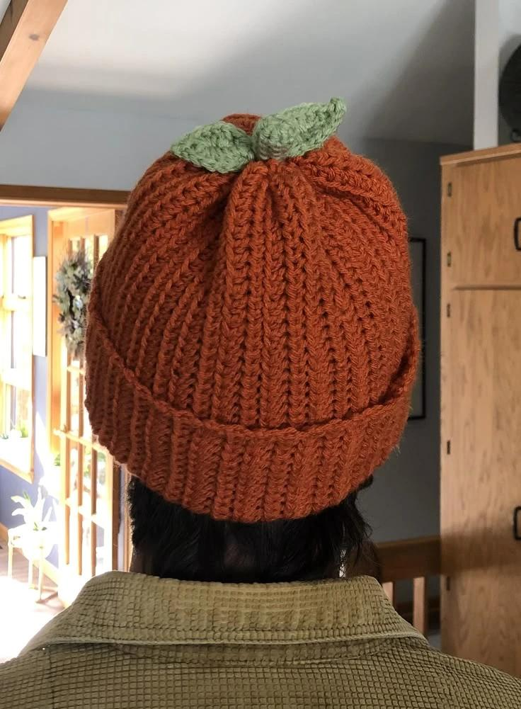
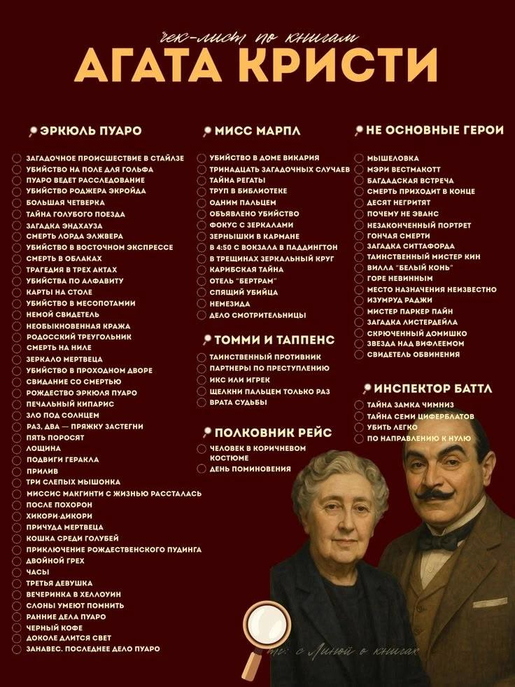

Петелька за петелькой
Также я люблю вязать. Это медитативное хобби, которое позволяет мне проявить креативность. Мои работы:

Работа №1

Работа №2

Работа №3

Работа №4
Что посмотреть за спицами?
А во время вязания я смотрю фильмы. Мой любимый жанр — Хоррор с какой-нибудь детективной линией. Вот список моих рекомендаций:

Идеальный вечер за просмотром